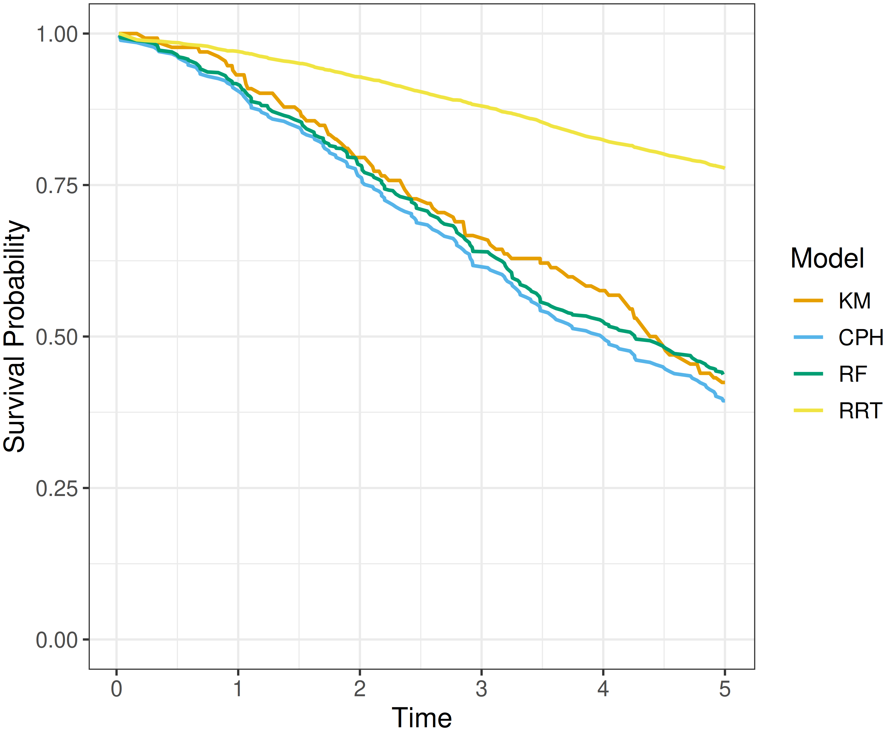
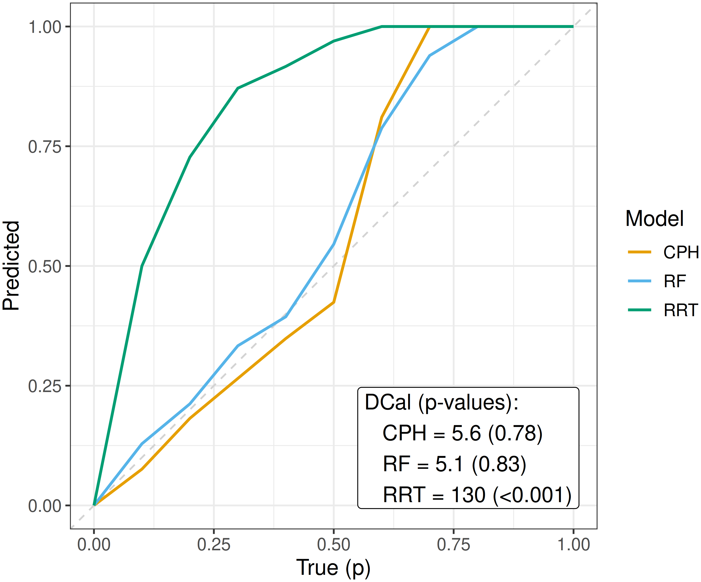

7 Calibration
In the survival analysis context, calibration measures evaluate the average quality of predicted distributions. Calibration and discrimination emphasize different aspects of predictive performance. A model with good discrimination may correctly rank observations while still producing systematically biased probability estimates. Conversely, a well-calibrated model may produce accurate population-level predictions but might not separate individual observations well.
The literature on calibration measures for survival analysis is comparatively limited (Rahman et al. 2017), reflecting both conceptual and methodological challenges (Van Houwelingen 2000). Unlike metrics that evaluate predictions at the level of individual observations, calibration assesses the average agreement across the population. Whereas other measures can accommodate censoring through a combination of reweighting and dynamic restriction of the risk set, calibration requires a principled way to incorporate censored observations when estimating the population-level average. The majority of research on survival calibration measures has focused on recalibrating Cox proportional hazards (PH) models (Demler et al. 2015; Van Houwelingen 2000). However, these methods are considered out of scope for this book, which focuses on measures applicable across all machine learning models.
A useful taxonomy of calibration measures separates them into point calibration and distributional calibration methods (Andres et al. 2018). Point calibration evaluates predictions at a single time point. For these measures to represent a useful quantity, the prediction horizon must be carefully chosen. Often this is taken to be a practically meaningful time point, for example the ‘5-year survival probability’ (Section 7.1.1), or the observed event time for each individual (Section 7.1.2). Point calibration methods are most useful when there is a clear choice of time point where the prediction should be optimized and when calibration at other time points may be poorer or unknown; for example, when using reductions (Chapter 18). Distributional calibration measures evaluate the predicted distribution across all time points (Section 7.2). These may be preferred when the goal is to predict and interpret the full survival distribution and calibration across the entire curve is required.
7.1 Point calibration
As above, point calibration measures evaluate distributions at a single time point, usually a fixed time-horizon or the observed outcome time; these settings are discussed in turn.
7.1.1 Chi-squared methods
Calibration at a single time point effectively reduces survival prediction to a binary classification problem, where the outcome is defined by whether the event has occurred by time \(\tau\). A common calibration test in the binary classification literature is the Hosmer-Lemeshow test (Hosmer and Lemeshow 1980). Observations are ordered by predicted event probability and divided into approximately equal-sized groups (often deciles), such that observations with similar predicted probabilities are placed in the same bin. The expected and observed number of events in each group are compared using the test statistic:
\[ \chi^2_{HL} = \sum^G_{g=1} \frac{(o_g - e_g)^2}{n_g\hat{p}_g(1 - \hat{p}_g)}, \]
where \(G\) is the number of groups, \(o_{g}\) and \(e_{g}\) are the observed and expected number of events in group \(g\), \(n_g\) is the number of observations in group \(g\) (usually \(n_g = n/G\)), and \(\hat{p}_g\) is the average predicted probability of event in each group. Under the null hypothesis, the test statistic follows a \(\chi^2_{G-2}\) distribution.
The most common adaptation to survival analysis appears to be the Nam-D’Agostino statistic (D’Agostino and Nam 2003). Let \(\bar{\hat{S}}_g(\tau), \bar{\hat{F}}_g(\tau)\) be the average predicted survival and cumulative distribution functions respectively evaluated at \(\tau\) for group \(g\), and let \(\hat{F}_{g;KM}\) denote the cumulative distribution function implied by the Kaplan-Meier estimator fit within group \(g\), then \(o_g(\tau) = \hat{F}_{g;KM}(\tau)n_g\) and \(e_g(\tau) = \bar{\hat{F}}_{g}(\tau)n_g\), giving the test statistic:
\[ \chi^2_{ND}(\tau) = \sum^G_{g=1} \frac{(\hat{F}_{g;KM}(\tau)n_g - \bar{\hat{F}}_{g}(\tau)n_g)^2}{n_g\bar{\hat{F}}_{g}(\tau)\bar{\hat{S}}_{g}(\tau)}, \tag{7.1}\]
which follows \(\chi^2_{G-1}\) under the null. This method can evaluate predictions from any survival model, making it more flexible than other methods (Demler et al. 2015). Given the dependence on non-parametric estimators, analogous constructions may be possible beyond single-event, right-censored settings by substituting appropriate estimators; for example, in the competing risks setting by replacing \(\hat{F}_{g;KM}\) with cause-specific CIFs and using the Aalen-Johansen estimator to estimate the observed event probabilities. However, these extensions appear to be less established in the literature. Similarly, extension to other censoring and truncation types may follow using the non-parametric estimator adaptations discussed in Section 3.5.2.
Analysis of (7.1) indicates that the proportion of Type I errors increases with higher proportions of censoring (Demler et al. 2015), leading to the adaptation:
\[ \chi^2_{GND}(\tau) = \sum^G_{g=1} \frac{(\hat{F}_{g;KM}(\tau) - \bar{\hat{F}}_{g}(\tau))^2}{\widehat{\operatorname{Var}}(\hat{F}_{g;KM}(\tau))} \sim \chi^2_{G-1}, \tag{7.2}\]
where \(\widehat{\operatorname{Var}}(\hat{F}_{g;KM}(\tau)) \equiv \widehat{\operatorname{Var}}(\hat{S}_{g;KM}(\tau))\) is the Greenwood variance estimator (3.20).
Theoretically, one could apply (7.2) across several time points (accounting for multiple testing) to try to capture calibration across a range of times; however, this would be inefficient in many cases. Instead, one might consider D-calibration (Section 7.2.2), which generalizes the \(\chi^2\) test idea to evaluate calibration across the full distribution. Another possibility for point calibration is to evaluate predicted probabilities at the observed event time for each observation. While still point-wise, the evaluation time is observation-specific and therefore spans the observed event process rather than relying on a single fixed time point.
7.1.2 Event frequency calibration
Van Houwelingen proposed several measures for calibration, which evaluate whether “observed data are consistent with the expected data from the [predicted] model” (Van Houwelingen 2000). Only one of the proposed measures generalizes to all survival models that make distribution predictions, termed here event frequency calibration. Event frequency calibration defines a model as well-calibrated if, across the entire test set, the total number of observed events is close to the total number of events predicted by the model.
Formally, this result can be derived using counting process theory (a full derivation is provided in Appendix 2 of Hosmer Jr et al. (2011)). The core theoretical relation underlying event frequency calibration is:
\[ \mathbb{E}[\Delta_i] = \mathbb{E}[H(T_i \mid \mathbf{x}_i)], \]
that is, for an individual with covariates \(\mathbf{x}_i\) and outcome time \(T_i\), the expectation of the true cumulative hazard evaluated at that time equals the expected number of events for that individual.
Hence, event frequency calibration tests whether the estimated cumulative hazard satisfies
\[ L_{EF} := \frac{\sum_i \delta_i}{\sum_i \hat{H}(t_i \mid \mathbf{x}_i)} \approx 1, \]
where \(\hat{H}(t_i \mid \mathbf{x}_i)\) is the cumulative hazard function from the predicted distribution for observation \(i\) evaluated at their observed outcome time \(t_i\). The denominator represents the total number of events expected under the predicted model, which is compared to the observed total number of events.
To obtain a loss that can be minimized, one may instead consider
\[ L_{EF^1} = \left\lvert 1 - \frac{\sum_i \delta_i}{\sum_i \hat{H}(t_i \mid \mathbf{x}_i)} \right\rvert, \]
or if a smooth, differentiable function is preferred,
\[ L_{EF^2} = \left(1 - \frac{\sum_i \delta_i}{\sum_i \hat{H}(t_i \mid \mathbf{x}_i)}\right)^2; \]
both options are minimized at \(0\).
7.2 Distributional calibration
Calibration over a range of time points may be assessed quantitatively or qualitatively, with graphical methods often favored. Graphical methods compare the average predicted distribution to the expected distribution, which can be estimated with a non-parametric estimator, discussed next.
7.2.1 Calibration plots
Calibration plots, also known as reliability diagrams, are graphical summaries comparing predicted event probabilities with the ground truth (Wilks 1990). In binary classification, the ground truth is represented by observed event frequencies within each group of interest. In survival analysis, censoring prevents direct calculation of event frequencies so these must be estimated. In single-event, right-censored survival analysis, the natural estimate is the Kaplan-Meier estimator fitted on the evaluation data, denoted here by \(\hat{S}^*_{KM}\).
Let \(\hat{S}(\cdot \mid \mathbf{x}_i)\) be the survival function from the predicted survival distribution for observation \(i\), then the average predicted survival function at time \(\tau\) is:
\[ \bar{\hat{S}}(\tau) = \frac{1}{n} \sum^{n}_{i = 1} \hat{S}(\tau \mid \mathbf{x}_i). \tag{7.3}\]
Plotting (7.3) alongside \(\hat{S}^*_{KM}\) at all observed time points provides a visual comparison of how closely these curves align. An example is given in Figure 7.1, a Cox proportional hazards model (CPH), random survival forest (RF), and relative risk tree (RRT) are all compared to the Kaplan-Meier estimator (KM). This figure highlights the advantages and disadvantages of this method. The relative risk tree is clearly poorly calibrated as it increasingly diverges from the Kaplan-Meier. In contrast, the Cox PH and random forest are difficult to compare directly, as both models frequently overlap with each other and the Kaplan-Meier estimator. While it is possible to say that the Cox PH and random forest are better calibrated than the risk tree, it is not possible to say which of the first two is better calibrated and if their observed difference from the Kaplan-Meier estimate is significant at a given time (when not clearly overlapping).

This method is useful for making broad statements such as “model X is clearly better calibrated than model Y” or “model X appears to make average predictions close to the Kaplan-Meier estimate”, but limited quantitative interpretation is provided. This is also only a marginal calibration check; it assesses whether the average predicted survival curve agrees with the average experience across the whole test set and does not guarantee calibration within meaningful subgroups. This method can be refined for more fine-grained information by instead using predictions to create ‘risk groups’ that can be plotted against a stratified Kaplan-Meier (Austin et al. 2020). However, this is harder to interpret and adds subjectivity around the number of risk groups to create and how they are defined (Austin et al. 2020; Royston and Altman 2013).
As this approach depends on a non-parametric estimator to represent the ground truth, it can be naturally extended to other censoring and truncation settings. For example, replacing the Kaplan-Meier estimator with the non-parametric maximum likelihood estimator (Section 3.5.2) enables calibration when interval censoring is present, or using the left-truncated risk-set definition (Section 3.5.2.3) allows application to left-truncated data. Similarly, this approach can evaluate competing risks data by comparing predicted cumulative incidence functions (CIFs) for a particular event to the CIF estimated with the Aalen-Johansen estimator (Section 4.2.2) (Austin et al. 2022; Wolbers et al. 2009). Interpretation becomes challenging in the competing risks setting as separate plots are required for each cause, making it difficult to assess calibration over multiple events.
7.2.2 D-calibration
Recall that calibration measures assess whether model predictions align with population-level outcomes. In probabilistic classification, this means testing if predicted probabilities align with observed frequencies. For example, among all instances where a model predicts a 70% probability of the event happening, approximately 70% of the corresponding observations should actually experience the event. In survival analysis, calibration is extended by examining if predicted survival probabilities align with the actual distribution of event times. This is motivated by a well-known result: for any continuous random variable \(X\), it holds that \(S_X(X) \sim \mathcal{U}(0,1)\) (Angus 1994). This means that, regardless of whether the true outcome times, \(Y\), follow a Weibull, Gompertz, or any other continuous distribution, the survival probabilities evaluated at those times should be uniformly distributed in a well-calibrated model,
\[ \hat{S}(Y) \sim \mathcal{U}(0,1). \tag{7.4}\]
D-calibration (Andres et al. 2018; Haider et al. 2020) leverages the fact that the event times, \(y_i\), are independent and identically distributed realizations from the distribution of \(Y\), which justifies replacing \(Y\) with \(y_i\) in (7.4) (Lemma B.2 Haider et al. 2020). A survival model is considered well-calibrated if the predicted survival probabilities at event times follow a standard uniform distribution: \(\hat{S}(y_i) \sim \mathcal{U}(0,1)\) — for now censoring is ignored.
To test whether a random variable follows a particular distribution, in this case if the predicted survival probabilities follow a standard uniform distribution, the \(\chi^2\) test statistic can be employed:
\[ \chi^2 := \sum_{g=1}^G \frac{(o_g - e_g)^2}{e_g} \]
where \(o_g, e_g\) are respectively the number of observed and expected event counts in groups \(g = 1,\ldots,G\).
To estimate the expected number of observations, first note that for this measure the \(\chi^2\) statistic tests whether predicted survival probabilities are evenly distributed across the \([0,1]\) interval. To do so, the \([0,1]\) range is partitioned into \(G\) equal-width bins. If \(n\) is the total number of observations, then under the null hypothesis of a uniform distribution, the expected number of events in each bin is \(e_g = n/G\).
To define the observed number of events in the \(g\)th bin, \(\mathcal{B}_g\), first define the bin as the set:
\[ \mathcal{B}_g := \{i = 1,\ldots,n : \lceil \hat{S}(y_i \mid \mathbf{x}_i) \times G \rceil = g\} \]
where \(i = 1,\ldots,n\) are the indices of the observations, \(\hat{S}(\cdot \mid \mathbf{x}_i)\) are predicted survival functions, \(y_i\) are observed event times, and \(\lceil \cdot \rceil\) is the ceiling function. To avoid edge-case issues, the algorithm sets the predicted survival probability such that \(\hat{S}(t_i \mid \mathbf{x}_i) = 0\) is replaced with \(1\times10^{-5}\). For example, say there are \(5\) bins: \(\{[0, 0.2], (0.2, 0.4], (0.4, 0.6], (0.6, 0.8], (0.8, 1]\}\). The predicted survival probability for observation \(i\) is \(\hat{S}(y_i \mid \mathbf{x}_i) = 0.7\). Then, observation \(i\) falls into the fourth bin: \(\lceil 0.7 \times 5 \rceil = \lceil 3.5 \rceil = 4\).
The observed number of events can now be defined simply as the number of observations in the corresponding set: \(o_g = \vert \mathcal{B}_g \vert\).
Extension to all observed outcomes, \(t_i\), follows by partially allocating censored observations across multiple bins according to their conditional probability of belonging to each bin (Algorithm 2, Haider et al. (2020)); conditional event-independent censoring is assumed.
The D-calibration measure, based on the \(\chi^2\) statistic, is then defined by:
\[ D_{\chi^2}(\hat{\mathbf{S}}, \mathbf{t}) := \frac{\sum^G_{g = 1} (o_g - \frac{n}{G})^2}{n/G} \]
where \(\hat{\mathbf{S}}\) is the vector of predicted survival functions and \(\boldsymbol{\mathbf{t}} = ({t}_1 \ {t}_2 \cdots {t}_{n})^\top\) are the observed outcomes.
This measure has several useful properties. Firstly, the measure provides a simple quantitative summary through the test statistic and can be used to test the hypothesis that a model is ‘D-calibrated’ since, under the null, \(D_{\chi^2}\) asymptotically follows a \(\chi^2_{G-1}\) distribution, from which a \(p\)-value can be obtained. Secondly, \(D_{\chi^2}\) tends to zero as a model is increasingly well-calibrated, hence the measure can be used for model comparison. Finally, the theory lends itself to an intuitive graphical calibration method. A D-calibrated model implies
\[ p \approx \frac{\sum_i \mathbb{I}(t_i \leq \hat{F}_i^{-1}(p))}{n}, \tag{7.5}\]
where \(p\) is some value in \([0,1]\), \(\hat{F}_i^{-1}\) is the \(i\)th predicted inverse cumulative distribution function, and \(n\) is the number of observations. In words, the proportion of events occurring at or before each prediction \(p\)-quantile should equal \(p\) itself, for example 50% of events should occur before their predicted median survival time. By plotting \(p\) on the x-axis and the right-hand side of (7.5) on the y-axis, a perfectly D-calibrated model results in a straight line on \(x = y\). This is visualized in Figure 7.2 for the same models as in Figure 7.1. This figure supports the previous findings that the relative risk tree is poorly calibrated in contrast to the Cox PH and random forest but again direct comparison between the latter models is difficult from visual inspection alone.
While D-calibration shares the same limitations as Kaplan-Meier calibration plots for visual comparison, it additionally provides quantitative summaries that support more concrete conclusions. Returning to Figure 7.2, the relative risk tree is confirmed to be poorly D-calibrated with \(p<0.01\), indicating that the null hypothesis, that predicted survival probabilities follow the standard uniform distribution, can be rejected. Although the D-calibration statistics for the Cox PH and random forest differ slightly, the difference does not appear significant, as reflected in the overlapping curves.
